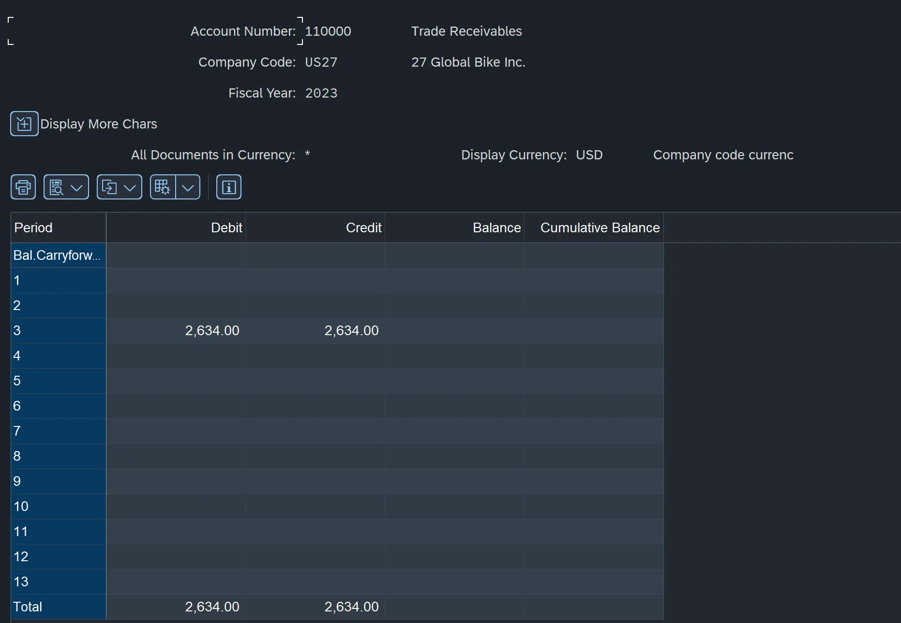

During an Intro to Network Science course in my undergrad, I became very familiar with the Twitter API as well as the NetworkX module of Python. In this course, we had to build out several networks, perform PageRank calculations, and overall perform analyses on large datasets.
Financial Accounting (FI)
During this chapter, I learned a substantial amount about FI in SAP and businesses in general, which posed as a great refresher on the Accounting course I took during my undergrad.
Some specific content we learned and configured in the system during this chapter include:
- We detailed and defined G/L (General Ledger) Accounts that can be posted to throughout the many business processes available in SAP.
- Considered Accounts Payable and Accounts Receivable Accounting and how G/L accounts should only have postings through reconciliation accounts.
- Determined a CoA (Chart of Accounts) and how accounts in the CoA are used to build up a G/L account.
- Set information related to posting periods and fiscal year information to ensure only proper postings are made to the system.
- Adjusted fields for different G/L accounts as not all transactions require access to the same data.
- Determined document number ranges for specific document types and postings to ensure consistent data between documents.

Example result of FI portion of assignment including a balance in the Trade Accounts Receivable G/L accounts.